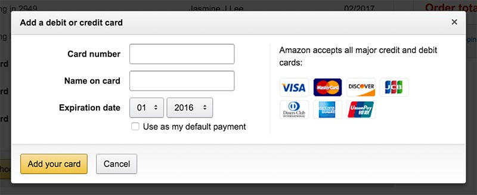

Credit Card Form | January 18th, 2016
Read Bill Derouchey's article/slideshow on Interface Design Here A form that I see often is a credit card form! This one specifically is from Amazon.com I think that this form is very straight forward, as it utilizes the same formatting as a credit or debit card-- the card number on top, your eyes wandering down to the name on the card, and then moving right to view the expiration and date. Even the image of what kind of card (visa, mastercard, discover) is kept in the same positioning to the right. It shows clear priority, clarity and purpose. The hierarchy is clear, the instructions appearing to the side and in box that shows a bit of depth, framing the portion where input is required. Everything that Derouchey brings up is used accordingly in this simple and straight to the point form.